디귿 향수 개발, 2020
북촌에 위치한 고즈넉한 한옥 ‘디귿집’에서 느껴지는 특유의 3가지 향을 모티브로 ‘기와’, ‘툇마루’, ‘바람길’ 이란 이름의 향을 작업하고 향수 생산을 진행하였습니다.
한옥이 주는 정서적인 안정감과 편안히 자신에게 집중할 수 있는 시간을 제공하는 한옥명상스테이 디귿집의 이미지에 맞게 마음이 차분해지는 향과 톤으로 작업을 진행하였습니다.
한옥이 주는 정서적인 안정감과 편안히 자신에게 집중할 수 있는 시간을 제공하는 한옥명상스테이 디귿집의 이미지에 맞게 마음이 차분해지는 향과 톤으로 작업을 진행하였습니다.
With the motif of the three unique scents felt in the quiet hanok ‘Diguet House’ located in Bukchon, we worked on scents named "Gi-Wha", " Toen-maru", and "Baram-gil" and proceeded with perfume production.
The work was carried out with a scent and tone that calms the mind according to the image of Hanok Meditation Stay ‘Diguet House’, which provides emotional stability and time to focus on oneself comfortably.
The work was carried out with a scent and tone that calms the mind according to the image of Hanok Meditation Stay ‘Diguet House’, which provides emotional stability and time to focus on oneself comfortably.

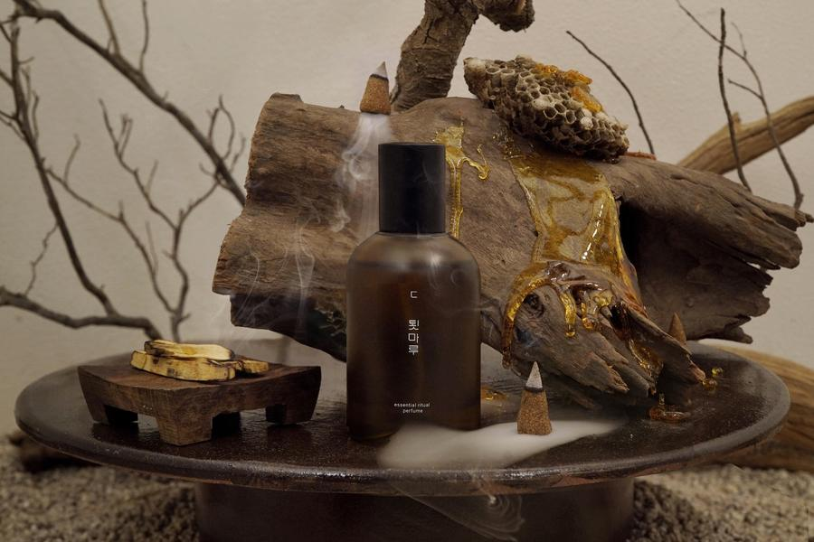
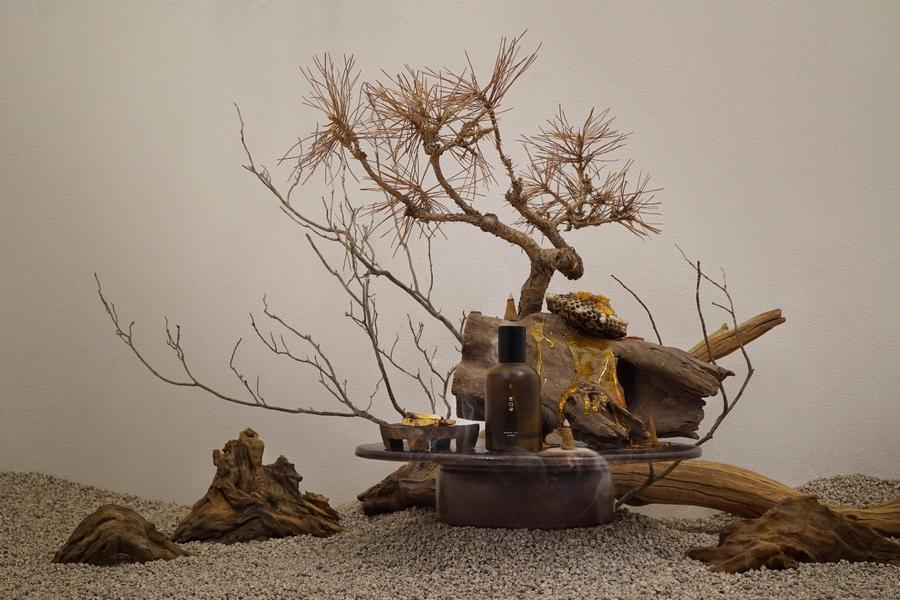
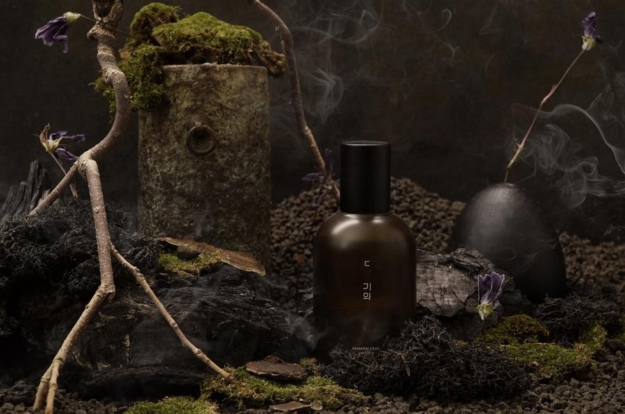
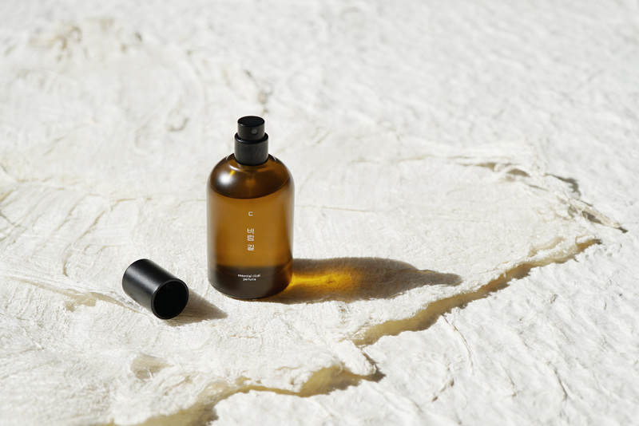
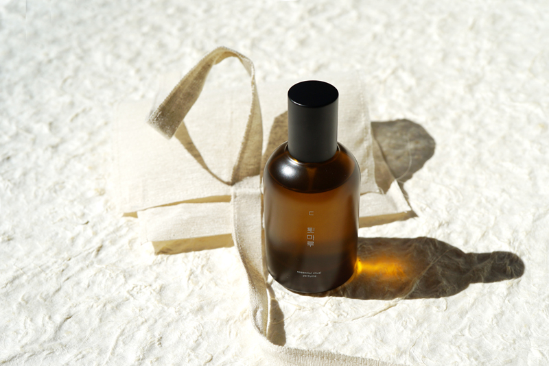
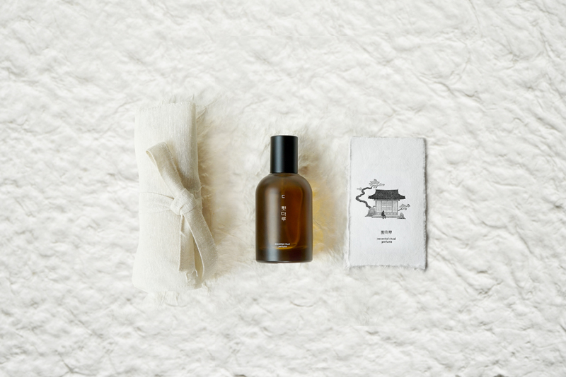
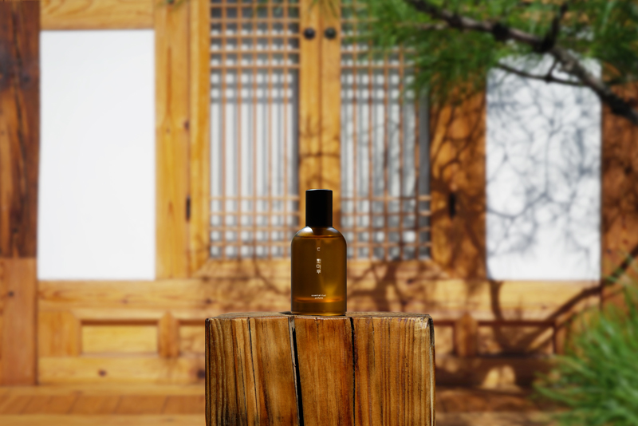
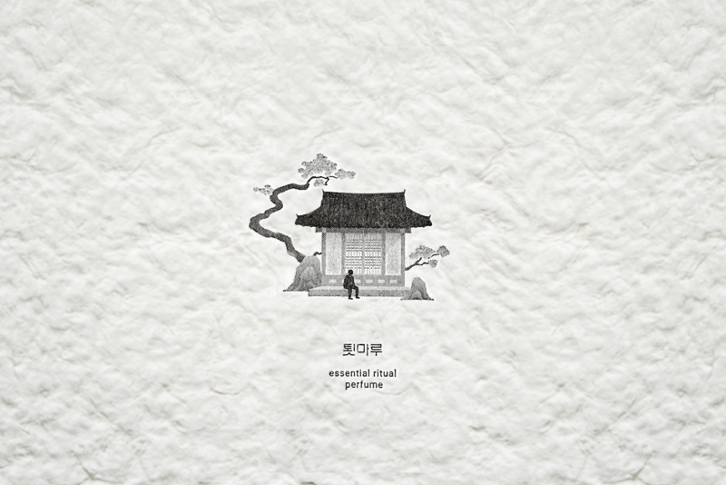
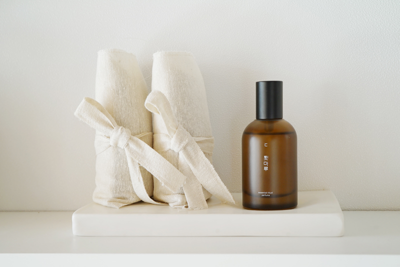
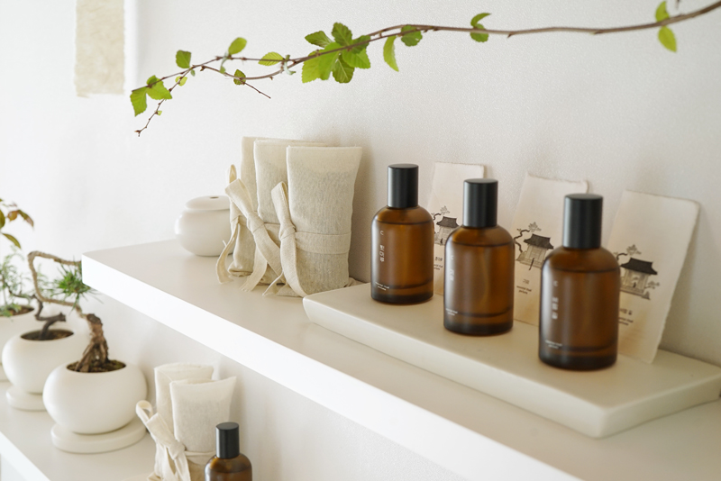
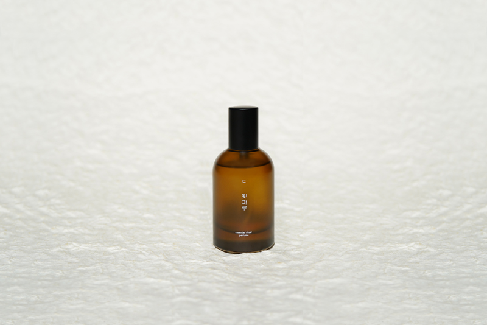
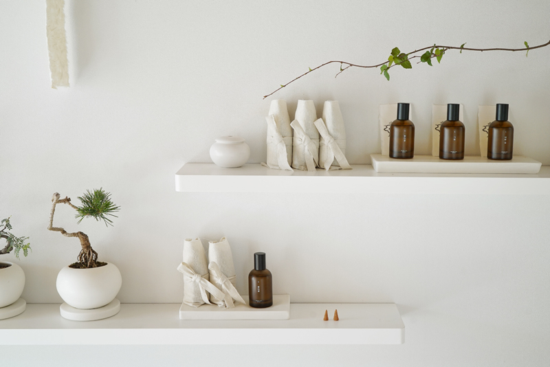
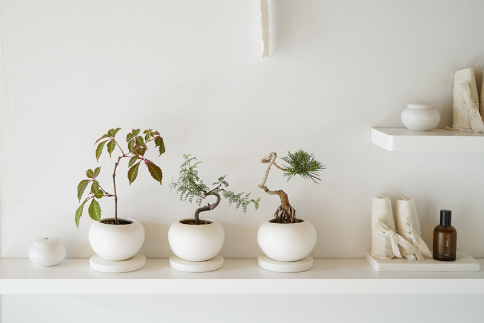
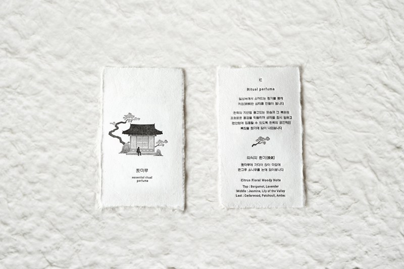
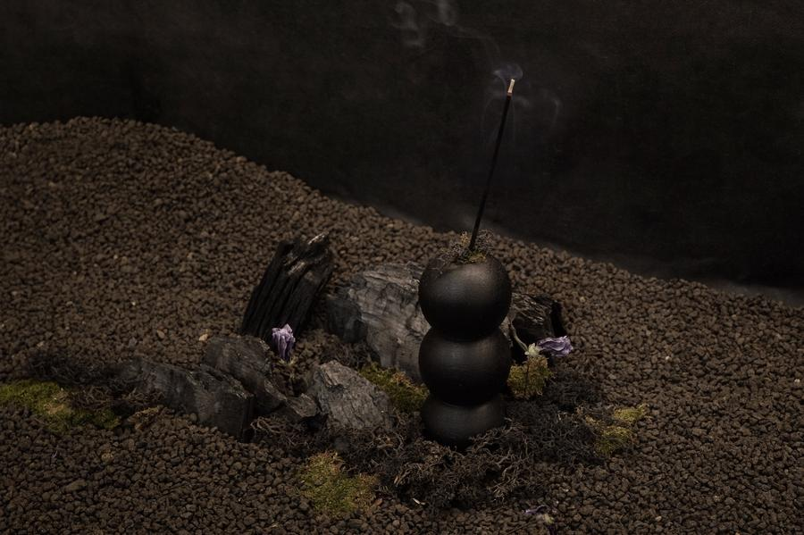
1 / 16